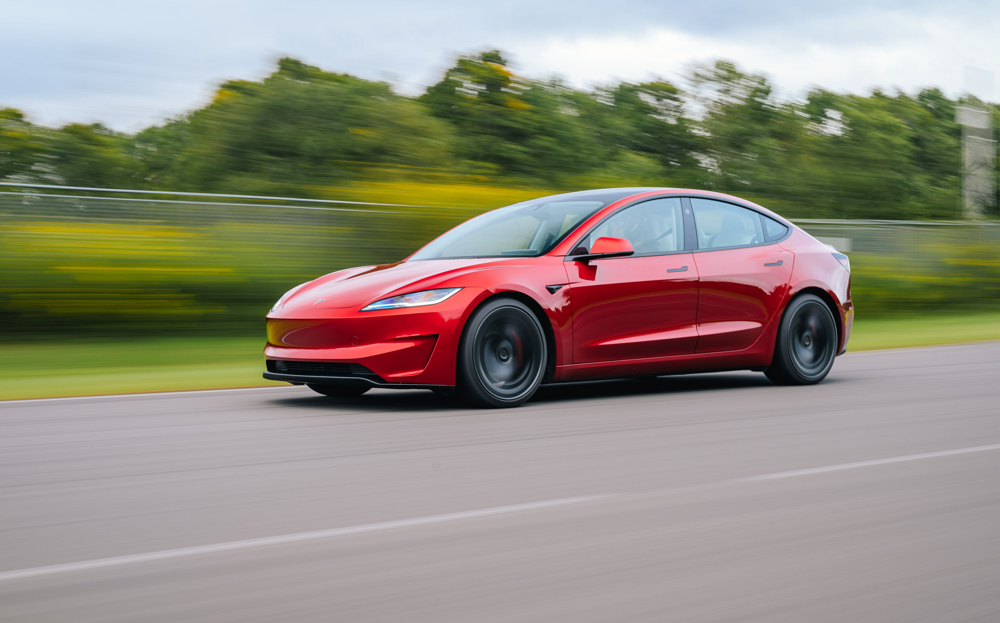
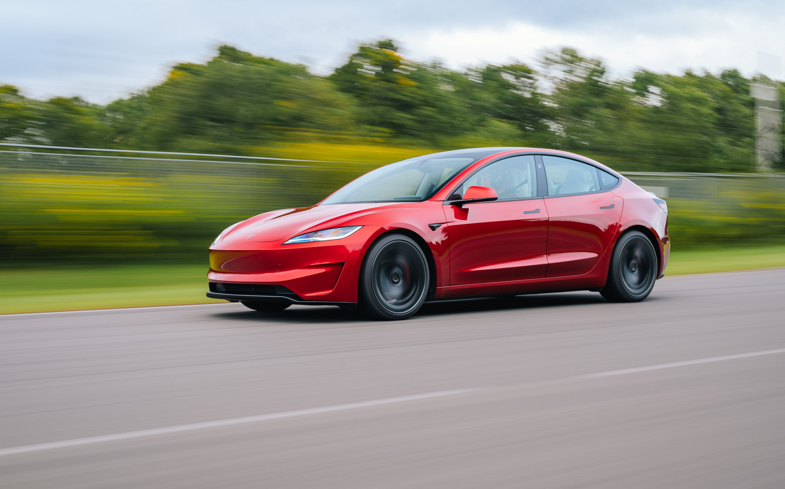

Tesla
From January to August 2024, I completed an internship at Tesla doing mechanical design for the Seating Engineering team. I primarily worked on design and prototyping for the Model 3 performance seats and Model S sports seats, which were both released during my internship period.
Skills/Softwares
CATIA | 3D Experience | PLM Software | Jira | PCB Design | Mechanical Design | Prototyping | Pneumatics | many more...
 

Primary Projects
Redesigned internal tool, designed housing using CATIA and PCB in KiCad, optimized
for cost and ease of assembly, collaborated with suppliers, resulting in an 82% cost
down and a 90% assembly time decrease.
Designed, prototyped, and presented to executives an industry-first mechanism for seat
adjustability to increase performance capabilities, including pneumatic-controlled air
cells and resistive switch control.
Designed, validated, and released production parts for Model 3 and Model S performance
seating systems.
Discovered, modified, and implemented a supplier part change creating an annual cost
savings of over $10k.
Other Projects
Worked on a number of vehicle platforms, including Model 3/Y, Model S/X, Semi Truck, and future programs.
Designed custom test fixtures and ran a wide range of tests, varying from quick validation to weeks-long performance testing.
Organized and performed comfort evaluations, including the use of pressure mapping.
Completed line-side investigations for manufacturing defects, made modifications, and worked with suppliers to resolve.
Frequently utilized rapid prototyping to make representative models for reviews and testing.
Reworked parts for production vehicles and made design changes and suggestions based on reworks.
Created rework instructions for associates, demonstrated, observed, and modified to improve rework time and quality.
Analysis and resolution of high-priority safety issue via testing and supplier communication.